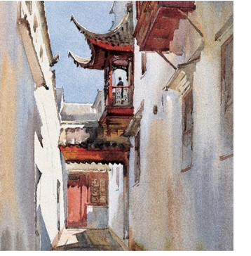
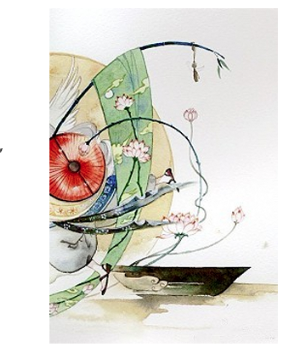
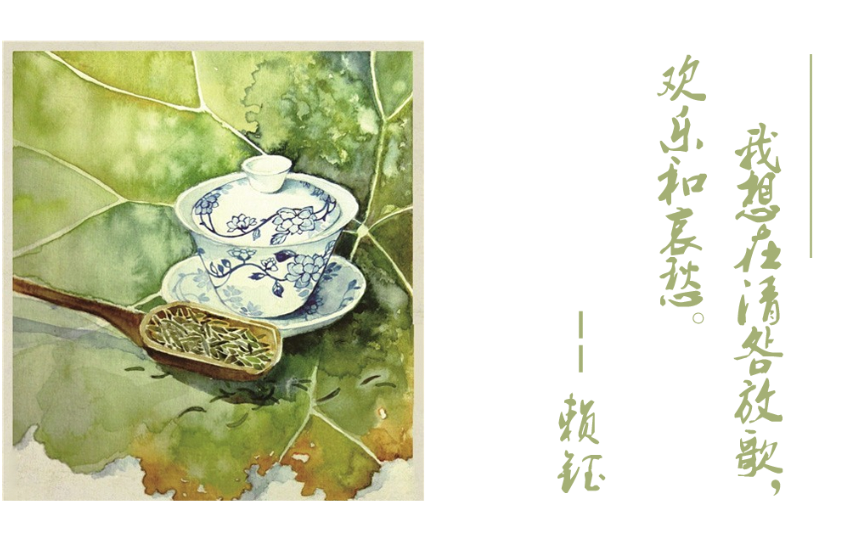

以前，她头发花白时，总会坐在半明半暗的地方，那时她已经老年痴呆，絮絮叨叨说的好像是以前的事。把囡囡当做先走一步的老伴，把野草当做久未见面的孙儿，拼凑出她或许可怜生活的点点碎片。
又是一年清明，她不知过了几个没有他的清明了。
其实，不知道他们这种凑在一起的夫妻有没有爱情，但我想如果问她的话，她也并不明白什么是爱。骨子里带给他们的传统应该是家庭责任吧。
她是个童养媳。
从小就被卖到了他家里干活。虽然家在小镇，他父亲也算是叫得上名号的人物，也有些家底，她的父母已经觉得她自己值当了。父亲在他的生身母亲死后又娶了一房小姨太，那个时候，还未双十的他们已经成家有了自己的小孩。
然而，就像影视作品里渲染的姨太太一样，他的小母欺负他俩老实将他父亲留下的所有黄金银元都卷走了，并且自己一人住在祠堂旁的大房间里，让他们住小屋。
战火没有烧到小镇，新中国也已经成立，他们却依旧过着痛苦的日子。孩子多，只能不停劳作去供养。
她累到从地里回家直接在床上—也就是块木板上，睡着了，连压死了自己的小女儿都不知道。
无法猜测她醒来后看到这一幕的心情，也不太能明白她把这件事讲出来时的感受，倒是母辈理解的说着因为他们那时的生活太过辛苦。就像他走了之后，她还是平淡的过着日子，没有看得见的所有哀伤，苦难生活抹去了哭与痛。
后来，小姨太用物质收买了大儿子和儿媳，他们俨然成为了一家人。
自己的孩子瞧不起自己还帮着别人欺负自己，甚至，教唆更小的女儿 朝自己父母脸上吐口水。然而，未曾见过之后的她如何苛责自己的孩子。 倒是脸上已是爬满皱纹的女儿在她的葬礼上哭到要断气，以及每年的清明， 他两的合葬墓前会有述说着什么、摸着眼泪的瘦弱声影。
人老了，似乎就不畏惧死亡，害怕的留下了孤独。
小时候不敢过清明也畏于去这里那里、墓前祠堂祭拜逝去的亲人，也 不理解为什么大家会聚在祠堂谈笑吃喝而里间弹着的是哀伤的曲调。
乡镇现在还是会留着古朴的清明习俗，当夜落烟火燃放时，我看到每 个人脸上的笑容：为自己准备了棺椁的垂暮老人倚在门边笑着，刚会走路的小孩嘴角的口水也来不及收起仰头望着半空，呀呀拍手。
顾城在《墓床》中写道：我知道永逝降临，并不悲伤 …人时已尽，人世很长/我在中间应当休息 /走过的人说树枝低了 /走过的人说树枝在长。就像她不曾越老越抱怨过去，不曾声嘶力竭呐喊，只是淡淡念想，好好生活。今日，我想念逝去的我爱的人，我笑着在四月东风中踏青出游。
